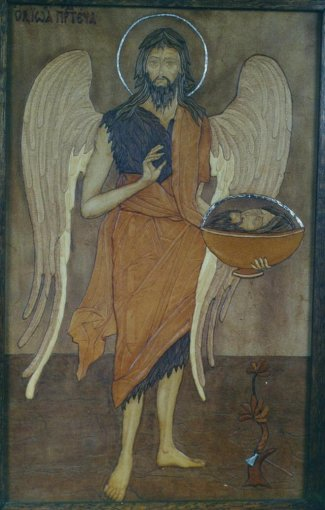

|  | |
| Ангел Пустыни.
(Святой Пророк Иоан Предтеча). Кожа. 61 см x 39 см. |
Angel of the Desert.
(Prophet st.John the Forerunner our Lord). Leather. 61 cm x 39 cm. |
Ангел Пустелі.
(Святий Пророк Іоан Предтеча). Шкіра. 61 см x 39 см. |